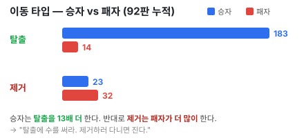

바둑의 정석·사활처럼, 이 게임을 우리 MCTS 엔진의 실제 데이터로 공부합니다. 통계는 자가대국 90여 판,
문제·해설은 엔진이 평가한 실제 위치에서 뽑았습니다.
※ 세부 수치는 "경향"으로 읽으세요. 큰 결론(탈출 레이스·받침·템포·2열 집중)은 빈도·승률·기하학이 모두 일관되게 가리킵니다.
헌터 184개 중 (4,1)에 55% — 출구 행에 가장 가까워 중앙 코리도로 가장 빨리 진입합니다.
★ 정석 진행 — 포석부터 20수까지
바둑의 포석·정석처럼, 자가대국 106판에서 가장 흔한 배치 형태(포석)를 뽑고, 그 형태에서 엔진의 표준 진행을 20수까지 따라가며 각 수의 이유를 답니다.
⚠️ 배치는 유연합니다(각 칸 11~22%로 단일 정석은 없음). 아래는 가장 전형적인 형태이며, 진짜 정석은 그 원리(2열·양 팔·헌터 가장자리)입니다. 헌터만은 (4,1)/(4,7)이 50%로 강한 관례.
1) 포석 — 배치 형태 (1~12수)
가장 흔한 배치 형태 — P1(파랑)은 2열 중심 양 팔, P2(빨강)는 6열 대칭, 헌터는 가장자리. 말의 번호 = 그 팀의 배치 순서.
포석 요약: 5개의 말을 2열(P2는 6열)을 중심으로 위·아래 양 팔에 분산하고 헌터는 (4,1)/(4,7). → 한쪽에 몰지 않아 두 방향 탈출 위협을 준비하고, 헌터로 중앙 코리도를 빠르게 노린다.
2) 정석 진행 — 초반 이동 (13~20수)
괄호 안은 P1(파랑) 관점 승률(엔진 평가). 파란 점선=출발 칸, 파란 테두리=도착 칸.
정석 요약:선공(P1)이 템포를 살려 헌터로 중앙 코리도를 잡고, 말 하나를 출구 행(4행)에 올려 탈출 셋업을 시작한다. 양 팔 형태라 위·아래 어디로든 위협 가능 → 승률이 59→68%로 서서히 P1에 기운다. 후공(P2)은 대칭으로 맞서지만 반 박자 늦다 — 결국 첫 탈출을 먼저 완성하는 쪽이 이긴다(§10 해설 기보).
5. 기물 이동 우선순위 — 무엇을, 왜 먼저?

[최우선] 탈출 가능하면 즉시 탈출 (특히 2번째 = 승리). 정의상 가장 가치 높은 수.
상대 "탈출 임박" 차단 — 받침 제거(헌터)·길목 점거. 막는 한 수 = 상대 승리 한 수를 지움.
내 탈출 셋업 전진 (두 말 동시). 두 위협이면 다 못 막음.
[금지] 의미 없는 제거 추격 — 승자 탈출 183 vs 패자 제거 32. 제거 한 수 = 템포 손해.
격언: "탈출 한 수 > 제거 한 수." 제거는 상대 받침/임박 탈출을 지울 때만 의미가 있다.
6. 헌터 활용·심화 — "킬러가 아니라 수문장"
항목
수치
시사점
제거로 이긴 판
1 / 92
제거는 승리 경로가 아님
헌터 제거/판 (승자 · 패자)
0.25 · 0.35
진 쪽이 더 잡음 → 추격은 손해
종반 출구 이웃 점유 (승자 · 패자)
14 · 2
헌터는 길목·받침 통제에 쓴다
헌터 3대 용도 (우선순위)
받침 차단/제거. 상대가 출구 옆에 세운 받침을 없애면 상대 탈출이 통째로 무산 — 가장 가치 있는 한 수(문제 4·5).
출구 이웃 점거(길목). 헌터를 (3,4)·(5,4)·(4,3)·(4,5)에 놓아 봉쇄하거나, 거꾸로 내 탈출 받침으로 활용.
탈출 풀 줄이기. 상대 말 하나 줄이면 "2탈출" 난이도↑. 단 템포를 쓰니 확실할 때만.
⚠️ 헌터끼리는 못 잡고, 출구 통과·탈출 불가. 헌터는 "점수 사냥"이 아니라 지역 통제의 말이다.
7. 단계별 전략 (오프닝 / 중반 / 종반)
① 오프닝 (배치~초반, 약 1~15수)
2열·가장자리에 양 팔로 분산 배치, 헌터는 (4,1).
초반엔 무리한 중앙 진입보다 두 갈래 탈출 라인을 동시에 그린다.
② 중반 (약 15~45수) — 받침 다툼
출구 이웃 4칸을 선점한다(내 받침 만들기 / 상대 받침 막기).
상대가 탈출 임박이면 헌터로 받침 제거가 최우선. 내 탈출 셋업은 두 말 동시에.
여기서 첫 탈출이 보통 갈린다 → 첫 탈출 측 89% 승.
③ 종반 (약 45수~) — 결정
승부는 평균 55수째 2번째 탈출로 끝난다. 출구 4칸 통제가 전부.
한 수라도 받침/길목을 놓치면 즉시 실점. 이때 분석을 무제한으로 켜고 정밀하게.
8. 흔한 실수 (데이터가 말하는 패자의 습관)
실수
근거
헌터로 잡으러 다닌다
제거는 패자가 더 많이 함(0.35 vs 0.25), 제거 승 1%
말을 중앙(3열)·한곳에 뭉쳐 둔다
(3,3) 40% 최악, 헌터 하나에 길이 막힘
받침 없이 출구로 돌진
받침 없으면 출구를 그냥 지나침(탈출 실패)
리드에 방심한다
73% 우세가 역전됨(§10)
blue spot만 보고 승률을 안 본다
지는 자리에서도 "최선"은 표시됨 — 50% 밑이면 이미 밀린 것
9. ★ 정석·사활 문제집
엔진이 평가한 실제 위치입니다. 표시된 차례(파랑 P1 / 빨강 P2)가 둘 최선의 한 수를 찾아보세요. 출구는 가운데 초록, 노랑은 헌터 구역.
10. ★ 해설 기보 — "방심한 순간, 역전"
엔진 자가대국 한 판. 선공(P1·파랑)이 ~73%로 앞섰지만 역전패한 게임입니다. 아래는 P1 관점 승률 추이(매 수 엔진 평가) — 선이 내려갈수록 P2(빨강)가 유리.
게임 전체 P1(파랑) 승률 추이 — 17·39·41수에서 무너졌다
교훈: ① 첫 탈출(17수)이 균형을 무너뜨린다(53→30%). ② 종반 헌터로 받침 자리(4,5) 선점(39수)이 마지막 탈출을 완성시킨다. ③ 리드해도 방심하면 역전당한다 — 매 수 승률을 확인하라.
11. 분석 기능으로 복기하는 법
분석 표시 ON, 강도 정밀/심층(중요한 수는 무제한).
blue spot보다 승률 숫자를 봐라. 50% 밑 = 이미 밀린 것.
승률 추이 차트(📈)로 꺾인 지점=패착을 찾아 그 수만 무르기 → 다른 수 시험.
기보 저장 후 나중에 불러와 뒤로/앞으로로 복기(이 교재의 문제·해설처럼).
12. 용어 사전
용어
뜻
받침(backer)
출구 바로 뒤(이웃 칸)에서 내 말을 멈춰 세워 탈출시키는 말/벽. 탈출의 필수 조건.
출구 4칸
출구의 상하좌우 이웃 (3,4)·(5,4)·(4,3)·(4,5). 받침 자리이자 핵심 격전지.
탈출 임박(ready)
이번 수에 바로 출구에서 멈춰 탈출할 수 있는 상태.
이중 위협
두 말이 서로 다른 방향에서 동시에 탈출을 노리는 것. 헌터 하나로 못 막음.
템포
한 수의 빠르기. 먼저 탈출/셋업하는 쪽이 템포 우위.
blue spot
분석이 제시하는 최적수 강조 표시(파란 칸).
13. FAQ
Q. 제거(헌터)로 이기는 게 더 쉬운 거 아닌가요? A. 데이터상 제거 승은 92판 중 1판. 제거는 상대 탈출을 막는 수단일 뿐, 목표는 탈출입니다.
Q. 컴퓨터가 너무 셉니다. A. 난이도를 낮추고(쉬움/보통), 분석을 켜서 추천수·승률을 보며 배우세요. 진 판은 추이 차트로 패착을 찾아 복기하면 빨리 늡니다.
Q. 선공이 무조건 유리한가요? A. 54:46로 약간 유리하지만 호각입니다. §10처럼 리드도 방심하면 뒤집힙니다.
부록 — 데이터 요약
지표
값
선공(P1) 승률
54%
탈출 승 / 제거 승
99% / 1%
첫 탈출 측 승률
89%
2번째 탈출(승부 결정) 평균 시점
약 55수
종반 출구 이웃 점유 (승자·패자)
14 · 2
이동 타입 — 승자 탈출·제거 / 패자 탈출·제거
183·23 / 14·32
최고·최저 승률 배치칸
(3,1) 59% · (3,3) 40%
표본: MCTS 자가대국 약 90판 + 문제·해설은 엔진 평가 위치. · 상단 🖨️ 또는 Ctrl+P로 PDF 저장.